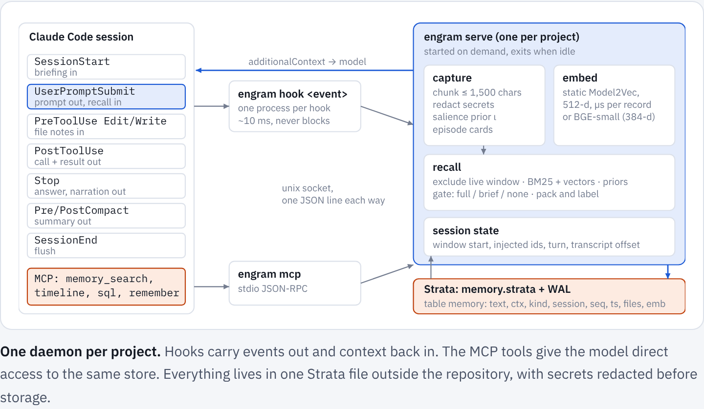
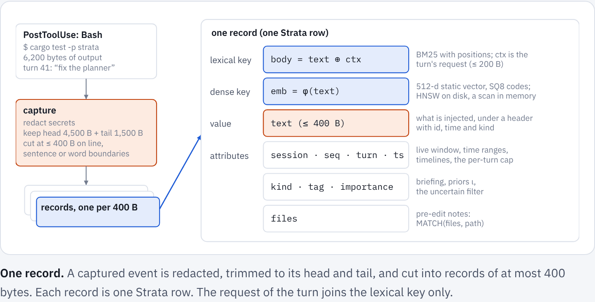
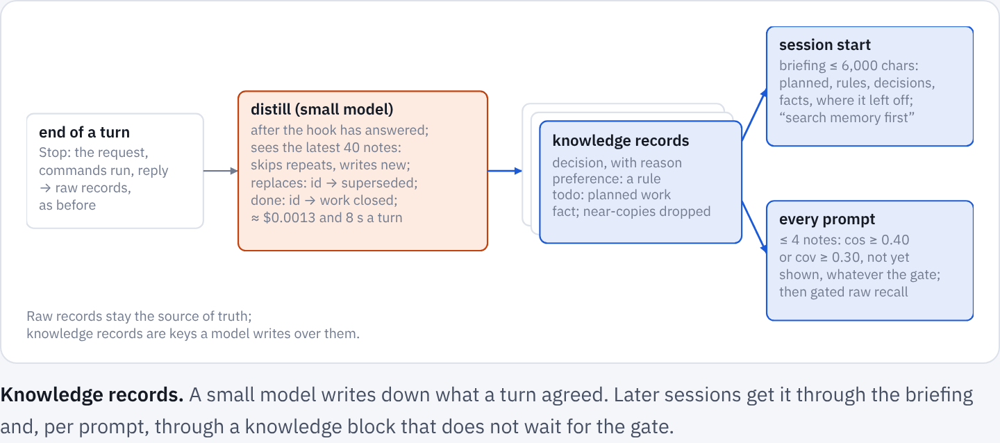
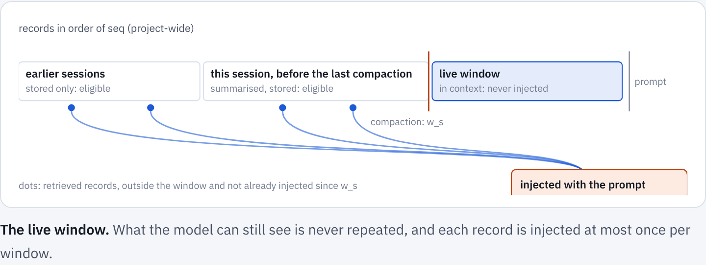
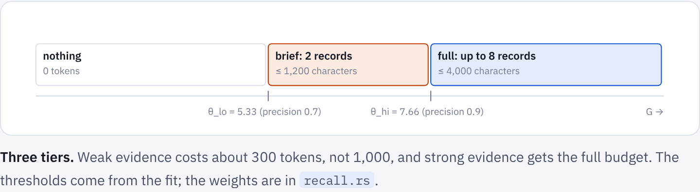
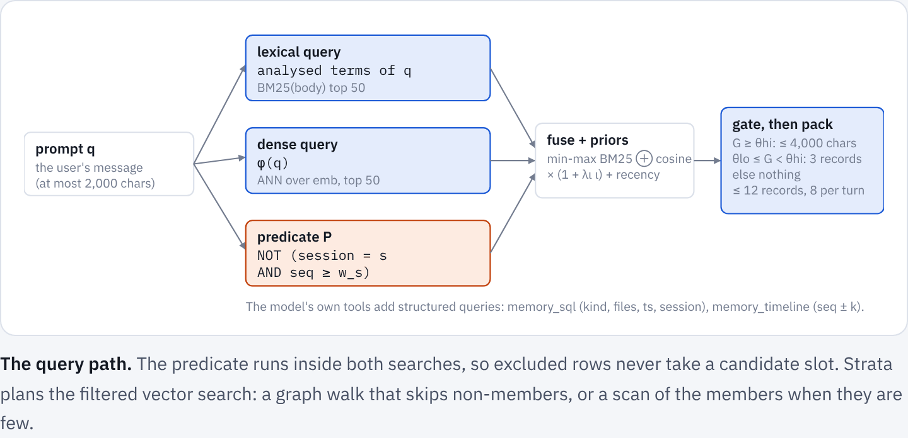

ChloeCtx: how it works
Reference, rendered from docs/chloectx/index.md.
These docs describe release 0.3.3. The docs of main describe the code as it is now.
On this page
ChloeCtx, an application built on ChloeDB, gives a coding agent (Claude Code first) a memory that outlives its context window. It records every prompt, answer, tool call and compaction summary of a project into one ChloeDB file, brings the relevant pieces back at the moments they matter without the model having to ask, and gives the model tools to search its own history when it decides to.
The problem#
A long session on a complex project outgrows any context window. Claude Code then compacts it into a summary of about 15,000 characters. Summaries keep the plan and lose the particulars:
- exact numbers, error messages and file paths;
- the reason an approach was rejected;
- a preference the user stated once, three hours earlier.
A new session starts with only CLAUDE.md and the auto-memory index. The session that built ChloeDB ran for 32 hours and wrote 43.7 MB of transcript across two compactions; its summaries hold under 0.1% of that text.
Three requirements follow:
- Store without being asked. Capture must not depend on the model remembering to save.
- Load without being asked, but only when it helps. Injected context costs tokens and attention, and irrelevant context hurts accuracy. Injection must be gated, budgeted, and must skip what the model can already see.
- Let the model ask precisely. When the model knows it needs history, it gets search, timeline and SQL tools over the same store.
Architecture#

Only one process at a time may write a ChloeDB file, and hooks are short-lived processes that run concurrently with the MCP server. So one daemon per project owns the database, and hooks and the MCP server are its clients over a Unix socket.
- Lazy start. The first client to find no socket spawns the daemon under a spawn lock; the daemon exits after 30 idle minutes. Its first hook takes 50–72 ms, because the 129 MB embedding table is memory-mapped rather than read.
- Warm state. The embedder, segment readers and the memtable stay in memory between hooks.
- Reads in parallel, one writer. Reads run on each client's own thread against a snapshot, any number at once, and the searches behind one prompt share that snapshot and run side by side while cores are free. Every write goes to one writer thread, which commits whatever is queued in one transaction and builds the new version before the write returns, so a reader never waits for a write or for the index build after it. In-memory chunks hold 256 records and scan their vectors instead of building an HNSW graph, so that build stays cheap. A full memtable becomes a segment, and segments merge, on ChloeDB's background threads, not on the writer's: with 150,000 appends back to back in the cloud container (4-core Xeon), the longest took 0.2–0.4 s, against 12–15 s when the writer flushed and merged itself (results).
- Never in the way. A client that cannot reach the daemon within its deadline prints nothing and exits 0. A memory failure never blocks a prompt or a tool call.
The store lives outside the repository, in ${CHLOECTX_HOME:-~/.local/share/chloectx}/<project-slug>/ (in ~/.local/share/engram on a machine that has it from before the rename), because transcripts can contain secrets. A redaction pass replaces keys, tokens, private keys, passwords in URLs and headers, and values assigned to names such as DB_PASSWORD with markers before anything is stored or synced; chloectx redact applies it to a store written before (what is redacted).
The data model#
One ChloeDB table, memory. Each record is one key–value pair with attributes.
| field | type | meaning |
|---|---|---|
id |
KEYWORD, primary key | <session-prefix>:<seq> |
session |
KEYWORD | Claude Code session id |
kind |
KEYWORD | prompt, answer, tool_call, tool_result, error, episode, summary, decision, preference, fact, todo, note |
tag |
KEYWORD | tool name, summary section, distilled, planned, superseded, … |
turn, seq, ts |
INT | user turn, project-wide sequence number, Unix seconds |
importance |
FLOAT | salience prior in [0, 1]; for an entity, how many records link to it |
files |
TEXT | paths the record touches (path components are terms) |
text |
TEXT, stored | the value: one chunk of at most 400 bytes, injected as is |
ctx |
TEXT, stored | the turn's request (≤ 200 characters); for notes also the situations they matter in (When:) and the code they were written against (Anchor:); part of the lexical key, never shown |
body |
TEXT, generated from text + ctx |
the lexical key that bm25 and MATCH search |
emb |
VECTOR(d), HNSW | the dense key: an embedding of text alone (for notes, text and its When: situations) |
links |
EDGES | edges to the turn a record came from, the files it touches (f:path) and the entities it is about (e:name), which are records of kind entity |

Keys are small and precise. A 400-byte window matches a question better than a 1,500-byte chunk in which the answer is one fact among many, and a context budget holds about ten such windows instead of five snippets. The turn's request joins the lexical key, so that a terse tool result ("test result: ok") is found by the words of the task it served; it stays out of the vector, where it would pull every response towards its request. The study behind these choices is in the results.
Records come in three levels:
flowchart LR
L0["<b>L0 · events</b><br/>prompts, answers,<br/>tool calls and results, errors<br/>(400-byte records)"] --> L1["<b>L1 · episodes</b><br/>one card per user turn:<br/>prompt, files, commands,<br/>errors, outcome"]
L1 --> L2["<b>L2 · knowledge</b><br/>decisions, rules, facts,<br/>planned work, compaction<br/>summary sections"]
The kind sets a salience prior ι: preference 1.0, decision 0.9, summary 0.8, prompt 0.7, error and episode 0.6, answer 0.5, tool call and result 0.3.
When to store: always#
Storage is cheap (a durable commit costs about 4 ms on a Mac, where it flushes the drive's write cache, and runs off the hook's path) and a missed record cannot be recovered later.
| hook | stored |
|---|---|
SessionStart |
session registered; live window opened |
UserPromptSubmit |
prompt, plus preference records for cue sentences ("always", "never", "from now on", …) |
PostToolUse |
tool_call and tool_result (or error), asynchronously |
Stop |
the answer, the commentary written between tool calls, the turn's episode, then distilled knowledge |
PreCompact |
commentary not yet captured |
PostCompact |
the summary, by section; the live window restarts here |
SessionEnd |
flush |
chloectx ingest-transcript back-fills old sessions from Claude Code's JSONL transcripts.
Distilled knowledge#
Raw records hold what was said; a later session needs what was agreed: a decision and its reason, a client's rule, the requirements of work announced for later. Much of it never reaches the code, and a request that depends on it rarely sounds like earlier work, so search alone misses it.

After each Stop, off the prompt's path, the daemon gives the turn (request, commands, reply) to a small model through claude -p, with up to 40 live notes for context: the ones most related to the turn wherever they are in the history, then the newest. Seeing the related ones is what lets the model update a note written weeks ago instead of adding a near-copy next to it. The prompt names the day the turn took place, so a relative date in it ("tomorrow", "next Tuesday") is counted from that day even when the turn is distilled later (chloectx distill, a backlog). The model returns JSON lines:
| item | stored as | tag |
|---|---|---|
| decision, with the reason | decision |
distilled |
| rule, constraint, convention | preference |
distilled |
| requirement of work planned but not done | todo |
planned |
| fact about the project or its environment, failed approaches | fact |
distilled |
replaces: id |
the old item is retagged | superseded |
done: id |
the planned item is retagged | done |
A new item whose analysed terms overlap an existing one by a Jaccard index J ≥ 0.6 is dropped. Distillation costs about $0.0013 a turn and 8 s with a small model, and never delays a prompt.
Each note also carries the situations it will matter in (when), written at the same time: "choosing a library or standard-library module", "parsing a config file" for a note that the client machines run Python 3.8. A later request rarely uses the words of the note it needs; it uses the words of the task. The situations join the note's lexical key and its embedding, so "add a settings.toml loader" finds the Python 3.8 note although they share no word. This is document expansion (doc2query) done once, when the note is written.
Consolidation#
Notes accumulate. Every eight distilled turns (or on chloectx consolidate), the daemon groups live notes that say related things: pairs whose embeddings have a cosine of at least 0.80, or 0.55 when they share an entity, joined strongest first into groups of at most ten. A small model rewrites each group as the smallest set of notes that keeps every detail, number, name and reason that still holds: a later change replaces the earlier version ("30 days, changed from 14"), duplicates merge, notes on different subjects stay apart, and rules, requirements and reasons are never dropped. Each merged note links to the notes it replaces (supersedes), which are retagged superseded and leave the briefing and recall, and is dated by the newest of them, not by when it was merged; a note the model would only reword is kept as it is.
Notes tied to the code#
A note about code goes stale when the code changes. Each note records what it was written against: the commit and branch, a content hash of the files it names or the turn changed (up to six), and the identifiers it mentions (ROUND_HALF_UP, load_config). When a note is shown (briefing, recall, file notes, the query engine), ChloeCtx checks those files in the working tree, reading each once:
| what changed | decision or fact | rule or requirement |
|---|---|---|
| nothing | shown as is | shown as is |
| a file it names, its identifiers still there | "app/billing.py changed since this note; check the current code" | the same |
| the file is gone, or an identifier it names no longer occurs | may be out of date: moved to its own briefing section | the code may now break it: stays with the rules, with "the code changed since this was stated; check that it still follows it" |
A rule does not go stale because the code moved away from it: a teammate who switched invoices to banker's rounding did not cancel the client's requirement, so the rule stays where the model will see it, with a warning that the code may now break it.
When to load#
Records still inside the model's context are never injected. For each session s the daemon keeps the window start ws, the sequence number at session start or at the last compaction, and every query excludes
$$ {\, r : r.\text{session} = s \;\wedge\; r.\text{seq} \ge w_s \,} \;\cup\; \text{injected}_s $$
where injecteds is the set of records already injected since ws.

There are three push points and one pull path:
sequenceDiagram
autonumber
participant U as User
participant C as Claude Code
participant E as ChloeCtx daemon
participant S as ChloeDB
C->>E: SessionStart
E->>S: planned work, rules, decisions, facts, last checkpoint
E-->>C: briefing (≤ 6,000 chars)
U->>C: prompt
C->>E: UserPromptSubmit
E->>S: knowledge query (kind IN decision, preference, fact, …)
E->>S: BM25 top 50 + vector top 50, live window excluded
E->>E: priors, gate G, pack
E-->>C: knowledge block + full / brief / no recall
E->>E: query engine: plan, search, rank (background)
C->>E: PreToolUse Edit(path)
E-->>C: up to 2 earlier errors or decisions about path
C->>E: PostToolUse
E-->>C: the query engine's picks, once ready
C->>E: memory_ask / memory_search / memory_timeline / memory_sql (pull)
E-->>C: results
C->>E: Stop
E-->>C: picks not delivered yet: reconsider once
E->>S: answer, commentary, episode
E->>E: distill the turn, check notes against code, consolidate every 8 turns (background)
SessionStart: a briefing, always, at most 6,000 characters: planned work with its requirements, rules, decisions, facts, open tasks, and where the previous session stopped, each note checked against the current code. It opens with an instruction to search memory before a design decision. After a compaction it also recalls the records most relevant to the last two prompts.UserPromptSubmit: knowledge, then gated recall. Up to four knowledge records not yet shown that match the prompt on their own text, bypassing the gate:
$$ \cos\bigl(\phi(q), \phi(r)\bigr) \ge 0.40 \;\lor\; \mathrm{cov}(q, r) \ge 0.30, \qquad \mathrm{cov}(q, r) = \frac{\sum_{t \in q \cap r} \mathrm{idf}(t)}{\sum_{t \in q} \mathrm{idf}(t)} $$
Then the main search and a three-way gate: strong evidence injects the top records up to 4,000 characters; weak evidence injects three records up to 1,200, marked as a weak match; otherwise nothing.
3. PreToolUse on Edit/Write: file notes. Up to two older errors, decisions or rules anchored to that path, once per file per window. With CHLOECTX_NEXT_FILES=1 (an experiment, off by default) the hook also names the files earlier sessions usually edited next: B follows A when an edit of B came within three edits after one of A (consecutive edits of one file count once), weighted by one over the gap and summed over sessions, and files above 1 are shown, at most two, each with its newest note. The daemon counts these from the edits the store holds as tool calls, reading only what was stored since it last looked, so nothing new is written. On the memory bench it changed neither how many tasks were solved nor which files were edited (results), so it stays off.
4. PostToolUse and PostToolUseFailure on Bash: error to fix. A command that fails and then passes, with edits or other commands between, is written down as a fix: an error record tagged fix holding the error's line, the steps (the last eight edits and commands that change something; ls, grep, git status and the like do not count) and what showed it fixed (the same command passed, or failed with another error). The same command means the same after cd, pipes, redirections, timeout and variable assignments are taken off (cd x && cargo test 2>&1 | tail is cargo test); a failure is followed for 60 tool calls, and one that passes with nothing between is not a fix. When a command later fails with the same error, in any session of the project, its fixes come with the failure, at most two, once a session. Errors are matched by their signature: the telling line (a compiler's error:, a panic, the last line of a Python traceback, fatal:, ...) with numbers, hashes, temporary paths and the project's path masked, or one sharing four in five of its words. The fix links to the prompt of the turn that fixed it.
5. Pull: MCP tools. memory_ask (by search alone, below; with deep, the query engine), memory_search, memory_timeline (the neighbourhood of a hit), memory_sql (one read-only SELECT over memory, with no model calls, a 2-second deadline and a 1,000-row cap), memory_remember and memory_forget (chloectx forget ID from a shell).
The briefing also ends with a one-line index of the notes it had no room for ("31 older notes are not shown here, about: …"), so the model knows what to ask for.
Ranking#
BM25 and vector search each return their top n = 50 under the exclusion filter. Scores are min-max normalised over the union C, a missing score counting as 0:
$$ \mathrm{rel}(r) = w\,\widehat{\mathrm{bm25}}(r) + (1 - w)\,\widehat{\cos}(r) $$
Priors then break near-ties without overriding relevance, with ι the salience prior and τ a recency scale:
$$ S(r) = \mathrm{rel}(r)\,\bigl(1 + \lambda_\iota\,\iota(r)\bigr) + \lambda_t\, e^{-(\mathrm{seq}_{\max} - \mathrm{seq}(r))/\tau} $$
Answers that admitted not knowing and repeats of the same question are excluded, because they would only replay a failure. Packing is greedy by S: at most twelve records, at most eight per user turn. Every injected line carries its provenance (kind, session, turn, relative time and id), and up to five further candidates follow as one line each for the model to open with memory_timeline.
Session context (off by default). With CHLOECTX_SESSION_CONTEXT=1 the prompt's search also uses what the session was just doing. Its last 20 records give a BM25 query (the files they name and the first line of their errors, at most 24 words) and the vectors of the newest four prompts, answers, tool calls and errors, which rank records by maxsim. A record's best normalised score in those two lists is added to rel with weight 0.5, and records about one of the session's files score 15% more. The gate still reads the prompt's own evidence, so the session reorders what is injected but not whether anything is. On the memory bench it made no measurable difference (198 of 208 runs against 199) and it adds 5.8 ms to a prompt's searches at a million records (results), so it stays off.
The gate#
Min-max scores cannot gate, since the best candidate always scores 1. The gate uses absolute evidence about the best candidates: the highest cosine and term coverage among the top five, how far the best BM25 and cosine scores stand above the tenth, whether BM25 and vectors agree on the top record, and whether the prompt refers back ("earlier", "we decided", "last time", …):
$$ G = a\,\cos_{\max} + b\,\mathrm{cov}{\max} + c\,\mathbb{1}{\text{cue}} + d\,\mathbb{1}{\text{agree}} + e\,(\cos_1 - \cos{10}) + f\,\Bigl(1 - \frac{\mathrm{bm25}_{10}}{\mathrm{bm25}_1}\Bigr) $$

The weights come from a logistic fit on LongMemEval-S (chloectx/scripts/fit_gate.py): positives are questions whose evidence the packed injection contains; negatives are questions asked against another conversation's store, abstentions and misses. θhi holds precision 0.9 on the fit and θlo precision 0.7. The gate is the weakest part of the design; the results say why.

Answering a question#
memory_ask (and chloectx ask) answers by search alone: no model call runs between the question and the answer, because the work was done when memory was written (the messages, the notes the distiller wrote, the user's rules). Four searches run side by side on one snapshot of the store (context.rs), each with the live-window exclusion:
| search | over | what the context shows |
|---|---|---|
| rules | preferences, by vector, cosine at least 0.3 | at most four, first, in at most a fifth of the budget |
| notes | decisions, rules, facts, plans (hybrid) | current versions only, each with the note it replaced ("changed DATE; was: …"), dated and ordered by the message each came from (a merged note by its newest source) |
| replies | the assistant's answers (hybrid) | the three exchanges these hits rank first: the start of the user's message (200 characters) and the part of the reply closest to the question (1,000) |
| excerpts | prompts and answers (hybrid) | the 400 characters of each closest to the question |
Notes take 40% of the 12,000-character budget the rules leave, excerpts 25%, and both then fill the rest in rank order; the replies come on top, so a context is about 15,500 characters (about 3,900 tokens). A question about order or a summary ("in what order", "summarize", "a timeline of") has its answer spread over many exchanges, which a search for its words misses: it gets one and a half times the budget, the replies of eight exchanges (500 characters each), and every live note in place of the searched ones, oldest first (at most 50,000 characters, the newest kept), about 43,000 characters in all on BEAM. It takes about 6 ms a question on BEAM's stores, 11 ms for a summary.
On BEAM 100K (20 conversations, 400 questions; results) this context scores 62.9, against 55.0 for the query engine's picks and 63.4 for an observational memory that hands the reader its whole log of observations, about 153,000 characters, with the same reader and judge. Both sides move when their notes are written again: over two runs each, search alone averages 61.6 and observational memory 62.1. With deep: true (chloectx ask --deep, or a model) memory_ask runs the query engine below instead.
Query understanding#
One search, however good its ranking, cannot answer "where does an unknown product code get caught, and why do we raise instead of skipping the line?". The answer is spread over a file, a decision and the error that led to it, and each is found by different words. The query engine turns a request into several searches, runs them all, and has a model pick what answers it.
flowchart LR
R["request<br/>(+ the session's last prompts)"] --> P["<b>planner</b><br/>small model:<br/>1–8 typed searches"]
P --> Q1["text"] & Q2["keywords"] & Q3["semantic"] & Q4["notes"] & Q5["entity"] & Q6["file"] & Q7["sql"]
R --> B["the request itself:<br/>text + notes"]
Q1 & Q2 & Q3 & Q4 & Q5 & Q6 & Q7 & B --> F["reciprocal-rank fusion<br/>30 candidates"]
F --> K["<b>ranker</b><br/>small model, or a stronger<br/>one for hard requests"]
K --> O["picked records, why each matters,<br/>a short reading, confidence"]
- Plan. The planner sees the request, the session's two previous prompts, the store's size and time span, and the names of the entities and files notes are about. It writes up to eight searches, several of one type if that helps, covering each part of a question and the constraints a task touches without naming them (the machines it runs on, file formats, earlier failed attempts). It also says whether memory can matter at all, and whether the request is hard.
- Search. Every search runs in parallel, plus two on the request itself, each with the live-window exclusion:
| type | runs |
|---|---|
text |
the hybrid search above (BM25 and vectors) |
keywords |
BM25 alone: identifiers, error text |
semantic |
vectors alone, with a sentence phrased like the record hoped for |
notes |
decisions, rules, requirements and facts only |
entity |
records linked to named entities (matched by id, stem or embedding), two hops through the graph |
file |
records about a path (MATCH(files, …)) |
sql |
a WHERE and ORDER BY over memory, checked to be a single condition |
- Fuse. Lists are merged by reciprocal rank, Σ 1/(61 + rank), so a record found by several searches comes first; the best 30 go on.
- Rank. The ranker reads the 30 (600 characters each, with kind, date and any staleness label) and picks at most eight, each with why it matters, plus a one-to-three sentence reading that cites ids, and a confidence. Only picks the session has not seen are shown.
It runs in one of four modes ("deep": {"mode": …} in the store's config.json, or CHLOECTX_DEEP):
| mode | when it runs | how its result arrives |
|---|---|---|
off |
never | |
tool |
only when the model calls memory_ask with deep (or chloectx ask --deep) |
the tool's result |
async (default) |
after every prompt of four words or more, once the store holds 20 records, in the background | with the next tool result; if the turn ends first, with the next prompt, when the picks are still new and the ranker's confidence is high or medium. The end of a turn does not wait for it. With "stop_recheck": true the end of the turn waits up to stop_wait_secs (at most 3 s) and, when the picks are new, asks the model once to check its answer against them (Claude Code runs the model again for that, and it says only what changed) |
sync |
the same prompts, before the model starts | in the prompt's context, after a wait (12 s at the median and 16 s at p90 in the cloud container, six requests at a time) |
Both model calls go through claude -p with no tools and no prompt caching (each prompt is new, so a cache write would cost more than it saves), like distillation, and together read about 5,800 tokens and write 1,150: $0.0012 a request with a small model ($0.58 for 500 LongMemEval questions).
Two settings make it cheaper. "planner": "none" (CHLOECTX_DEEP_PLAN=none) skips the planning call: the ranker reads the best 30 of the request's own two searches, taken deeper. "ranker": "local" (CHLOECTX_DEEP_RANK=local) replaces the ranking call with a logistic model over twelve features of each candidate (fused rank, similarity, term coverage, kind, length, recency) and keeps the top 5, with no model call; with planner also none the engine is free. On LongMemEval the default answers best: ranker only loses temporal questions, and the local ranker keeps about a quarter of the gain (results). The models are parameters: planner_model and ranker_model (default haiku, or CHLOECTX_DEEP_MODEL for both), and hard_model, a stronger ranker used only when the planner calls a request hard (CHLOECTX_DEEP_HARD_MODEL). memory_ask also takes a model for one question, so a user who allows a more expensive model can have it for the questions that need it.
Cost and latency targets#
| path | target | measured |
|---|---|---|
PostToolUse, Stop client |
< 10 ms | queued; embedded and committed in the background |
UserPromptSubmit |
< 100 ms p99 at 1M records | 24.9 ms p50, 38.6 ms p99 as a hook process |
SessionStart |
< 150 ms (daemon up), < 1 s with spawn | 50–72 ms including daemon start |
| ingest | > 1,000 records/s | 48,000–52,000 records/s with the static embedder |
memory_ask (search alone) |
< 100 ms | 6.9 ms a question on BEAM 100K's stores, one thread (11 ms for a summary) |
| query engine (planner and ranker) | off the prompt's path unless sync |
12 s p50, 16 s p90, $0.0012 per request with Haiku |
The default embedder is static (Model2Vec potion-retrieval-32M: token lookup and mean, 512 dimensions, microseconds per record). BGE-small (384 dimensions) is optional (--features bert) and costs about 50 ms per record on a CPU.
Install and use#
Install on your machine has the whole procedure, remote machines and dev containers included. In short:
git clone https://github.com/chloetech-ai/chloedb && cd chloedb && ./install.sh # every Claude Code session ./install.sh --project /path/to/your/project # or one project chloectx doctor # check the setup chloectx ui # browse what it stored
chloectx ask "where do invoice totals get rounded, and why that rounding mode?" # the query engine chloectx ask --model sonnet "..." # with a stronger model chloectx search "why did the planner pick post-filtering" chloectx sql "SELECT ts, text FROM memory WHERE kind = 'error' AND MATCH(files, 'exec') ORDER BY ts DESC LIMIT 5" chloectx remember decision "Prices are integer cents" chloectx ingest-transcript ~/.claude/projects/<project>/<session>.jsonl # back-fill old sessions chloectx distill # distill turns stored before distillation existed chloectx consolidate # merge overlapping notes now chloectx backup ~/backups/chloectx-2026-10-28 # a consistent copy of this project's store chloectx redact [--all] [--dry-run] # redact secrets a store recorded before redaction caught them chloectx stats | briefing | stop chloectx pack ./work.capsule # a capsule another agent mounts chloectx mount ./work.capsule # serve it as MCP tools (stdio)
A capsule hands a slice of this memory to another agent as one read-only file it queries: capsules.
| variable | effect |
|---|---|
CHLOECTX_DISABLE=1 |
turns the hooks off |
CHLOECTX_HOME, CHLOECTX_MODELS |
relocate the store and the models |
CHLOECTX_DISTILL=0 |
turns distillation off (or "distill": {"enabled": false} in the store's config.json) |
CHLOECTX_DISTILL_MODEL |
the model the distiller and consolidation use |
CHLOECTX_DEEP |
query engine mode: off, tool, async (default), sync |
CHLOECTX_DEEP_MODEL, CHLOECTX_DEEP_PLANNER_MODEL, CHLOECTX_DEEP_RANKER_MODEL, CHLOECTX_DEEP_HARD_MODEL |
the query engine's models (default haiku; the hard model is unset) |
CHLOECTX_DEEP_PLAN, CHLOECTX_DEEP_RANK |
none skips the planner; local ranks without a model call (defaults: model, model) |
CHLOECTX_CONSOLIDATE=0 |
turns consolidation off |
CHLOECTX_SESSION_CONTEXT=1 |
recall also searches with the session's last records (session context; or "rank": {"tail": {"enabled": true}} in the store's config.json) |
CHLOECTX_NEXT_FILES=1 |
before an edit, also the files usually edited next, with a note on each (when to load; or "next_files": true in the store's config.json) |
CHLOECTX_ERROR_FIXES=0 |
turns error to fix off (when to load; or "error_fixes": false in the store's config.json) |
CHLOECTX_EMBEDDER |
static (default), bert, or hash:<dim> for a model-free hash embedder |
The full design, including the evaluation plan, is in chloectx/DESIGN.md.